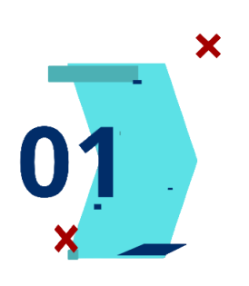
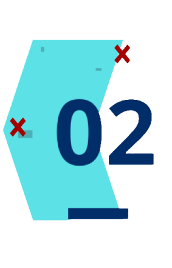
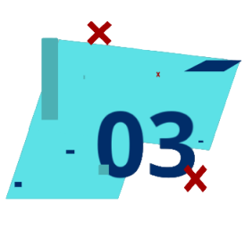

O que é TI?
A Tecnologia da Informação (TI) é a base das operações de empresas e instituições, usando computadores e sistemas de comunicação para gerenciar dados. A área oferece alta demanda, salários competitivos e constante inovação. Para atuar em TI, você precisa de conhecimentos em desenvolvimento de software, engenharia de software, ciência da computação, análise de sistemas, bancos de dados, redes de computadores e inglês. 
Existem diversas opções de formação, como cursos técnicos, graduação, pós-graduação, cursos online e bootcamps. A TI impacta a sociedade positivamente, mas exige constante aprendizado, lidar com pressão por resultados e competição no mercado de trabalho.
Sobre a FATEC
 A FATEC-SP, fundada em 1973, é uma instituição pioneira em ensino tecnológico no Brasil, com foco em formar profissionais qualificados para o mercado. Desde sua criação, a FATEC-SP se destaca pela qualidade do ensino, infraestrutura moderna, pesquisa e extensão, e parcerias com o setor produtivo. A instituição já formou mais de 30 mil tecnólogos, contribuindo para o desenvolvimento do país.
Sobre o curso
O curso de DSM é projetado para formar profissionais capacitados a projetar, desenvolver e testar softwares que funcionam em diferentes dispositivos, como computadores, smartphones, tablets e sistemas em nuvem. A principal característica desse curso é a sua abordagem multiplataforma, que prepara os graduados para atuar em um mercado de trabalho cada vez mais exigente e diversificado. 
Desenvolvimento de soluções personalizadas
Os graduados são capacitados a criar softwares que atendam às necessidades específicas de diferentes clientes, garantindo assim a satisfação e a eficácia no uso das ferramentas tecnológicas.
Trabalho em equipe multidisciplinar
No mercado atual, a colaboração é fundamental. Os alunos aprendem a trabalhar em conjunto com outros profissionais da área de tecnologia, o que enriquece a experiência e amplia as possibilidades de inovação.
Adaptação às tendências do mercado
O curso prepara os alunos para estarem sempre atualizados com as tendências do mercado e as novas tecnologias, o que é essencial em um campo que evolui rapidamente.
Solução de problemas complexos
A formação em DSM ensina os alunos a resolver problemas complexos e a tomar decisões estratégicas, habilidades indispensáveis para qualquer profissional de tecnologia.
Se você está em busca de uma carreira promissora no mundo da tecnologia, o curso de Desenvolvimento de Software Multiplataforma (DSM) nas Faculdades de Tecnologia (FATECs) pode ser a oportunidade perfeita para você.
curso é ideal para aqueles que desejam se aprofundar no universo da programação, se destacar na área da tecnologia e adquirir habilidades valiosas para criar soluções de software que atendam a diversas plataformas. Com uma formação sólida e abrangente, os graduados estarão prontos para enfrentar os desafios do mercado e contribuir de forma significativa para o desenvolvimento de soluções inovadoras. Não perca a chance de transformar sua carreira e se tornar um líder no mundo do software!
O que você aprende no 1º semestre do curso de DSM?

Linguagens de programação:
Você aprenderá as linguagens mais utilizadas no mercado, como Java, Python, C# e outras, dependendo da instituição e da atualização do curso.
Banco de dados:
Aprenderá a gerenciar e manipular dados em diferentes sistemas de banco de dados, como MySQL, PostgreSQL e outros.
Engenharia de software:
Desenvolverá habilidades para projetar e construir softwares de forma eficiente e organizada, utilizando metodologias ágeis e outras técnicas.

segurança da informação
Aprenderá a proteger os sistemas e dados contra ataques cibernéticos, garantindo a segurança das aplicações desenvolvidas.
.jpg)
Inteligência artificial
Será introduzido aos conceitos de inteligência artificial e como aplicá-los no desenvolvimento de softwares mais inteligentes e personalizados.
.jpg)
Desenvolvimento mobile:
Aprenderá a criar aplicativos para dispositivos móveis, tanto para sistemas Android quanto iOS.
.jpg)
Desenvolvimento web:
Desenvolverá habilidades para criar sites e aplicações web utilizando as tecnologias mais recentes.

Cloud computing:
Aprenderá a utilizar serviços em nuvem para desenvolver e hospedar aplicações.
.jpg)
Como se portar perante o mercado de trabalho
Este artigo te guiará no caminho para o sucesso profissional. Você aprenderá quais habilidades e atitudes são essenciais para se destacar no mercado de trabalho, como construir relacionamentos sólidos e se adaptar às mudanças.
Entre em contato
Site desenvolvido pelos alunos do 1º semestre do Curso de DSM da fatec-indaiatuba
© All right Reversed.